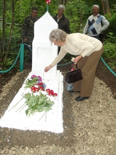
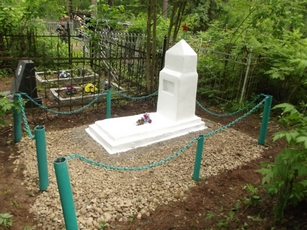

На Николо-Малицком кладбище восстановлена могила героя Великой Отечественной войны Михаила Осташова
Тверитянка Лидия Иванова помнит эту могилу с тех пор, как сама стала приходить к могилам своих родных на кладбище в Николо-Малицу. В памяти отложилось: рядом — могила участника войны, родные которого или уже умерли или забыли о покойном. Последний раз лет тридцать назад Лидия видела там одинокую старую женщину.
С тех пор могила постепенно приходила в запустение: холм зарастал травой, выцветала красная звезда, разрушался немудреный обелиск. Лидия на собственном опыте знает, как это страшно, когда память о человеке вот так стирается и постепенное исчезает: ее отец без вести пропал во время войны в Ленинградской области. Спустя годы могила все-таки отыскалась, и когда Лидия Иванова приехала к ней, ее поразила запустение и заброшенность. Поэтому и к забытой могиле на Николо-Малице у нее особое отношение. Еще в 2007 году она обратилась в муниципалитет с просьбой восстановить историческую и человеческую справедливость — отреставрировать захоронение. Однако дело сдвинулось с места только в 2011 году после обращения к Главе города Твери Владимиру Бабичеву. Глава города поручил депутатской группе «Никто не забыт, ничто не забыто» взять на контроль решение этого вопроса. В ходе работы удалось выяснить, кто покоится в заброшенной могиле на Николо-Малице. Лидия помнила только звание покойного: майор. А вот ее супруг вспомнил и фамилию: Осташов. Имея эти данные, фонд «Жить и помнить» под руководством Александра Терентьева сумел обнаружить в военных архивах ряд документов, рассказывающих о судьбе майора Михаила Михайловича Осташова, уроженца Тверской области.
Родился Михаил Осташов в 1915 году в деревне Жданово Тверской области, в 1936 года призван уже из Ленинградской области в Красную армию (жена остается в Ленинграде), 1939 году вступает в ВКП(б), на фронте судя по всему с первых дней войны.
Боевой путь майора Осташова отмечен большим числом боевых заслуг. В 1941 году Михаил Осташов, будучи старшим политруком в составе сводного отряда (4 партизанских отряда и полубатальон особого назначения Западного фронта) 24 ноября 1941 принимал участие года в рейде в тыл врага в Угодско-заводской район Московской области. Сводный отряд нанес серьезный ущерб врагу: уничтожены коммуникации и 600 офицеров и солдат, в том числе подразделений Гестапо. Об этом рейде было доложено командующему Западным фронтом генералу армии Г.К. Жукову, который подписал приказ о награждении отличившихся участников рейда. Наградили в числе прочих и Осташова — орденом Ленина.
А в феврале 1942 года в Смоленской области в районе Износском районе (теперь Калужская область) майор Осташов выполняет миссию представителя Западного фронта. В июле 1942 года его вместе с членами партизанского отряда имени Лазо приказом командующего Западным фронтом награждают орденом Красного знамени, причем не в числе партизан: очевидно и в этот раз Михаил Осташов выполнял роль куратора партизан от Западного фронта. Погиб майор Осташов 6 августа 1944 года, будучи в должности замполита 1-ого гвардейской воздушно-десантной бригады.
Депутатской группе «Никто не забыт, ничто не забыто» удалось найти взаимопонимание в вопросе реставрации могилы майора Осташова с общественными объединениями города Твери. Наибольшую заинтересованность проявило Тверское Городское казачье общество и его атаман Юрий Мякеньких. Городские казаки взяли на себя все работы: в середине июня был проведен первый субботник, а уже в канун 22 июня — Дня памяти и скорби — могила майора Михаила Осташова уже выглядела как подобает месту упокоения подлинного героя войны.
Источник: eTver.ru - лента новостей
|